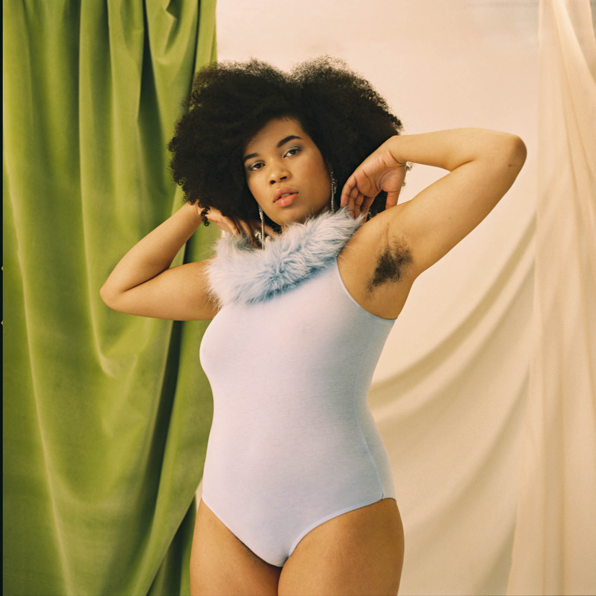
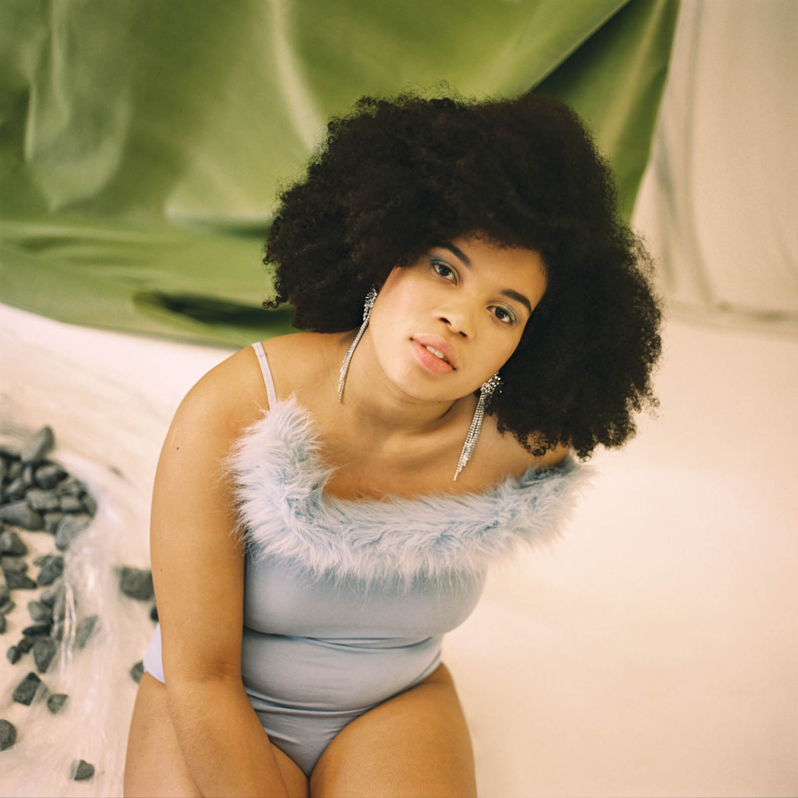

Metal Magazine


Metal Magazine neix a Barcelona al juny de 2006 com un projecte editorial independent de mirada curiosa i esperit internacional, conformada per una interessant barreja de moda, fotogriafia i art.
'Daily Revolutions. La fuerza de ser mujer' és un projecte fotogràfic d'Ana Pardo, coneguda com a Arden, que busca mostrar a dones no normatives i retre'ls-hi homenatge.
- Fotografia: Arden
- Direcció artística: Paula Coderch i Arantxa Gil
- Estilisme: Ángela Ibáñez
- Maquillatge: Paula Barjau
- Perruqueria: María José Ventosa
Didi, Tess, Kali, Jihane, Elena i Rosana són els noms de les models que apareixen a les fotografies i que comparteixen la seva visió sobre ser dones i mostren les seves petites revolucions diaries. Per a elles, la seva propia existència ja és una declaració d'intencions.
"No sóc només dona, sinó que també sóc una dona negra mestissa a la que li agraden altres dones, persones no binaries i de vegades homes. Considero que donar visibilitat a totes les coses a les que he de fer cara cada dia per tenir aquestes característiques, ja jo puc considerar una revolució."
Rosana